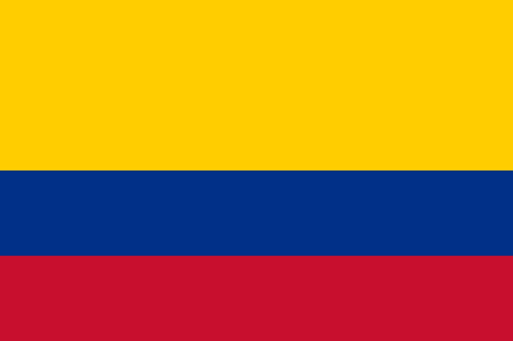

Dél-Amerika
Argentína

Bolívia
.jpg)
Brazília
Chile

Kolumbia
Ecuador
ARGENTÍNA
Főváros
Buenos Aires
Lakosság
kb. 45 000 000 fő
Terület
2 780 400 km²
Államforma
Alkotmányos Köztársaság
Pénznem
Peso
Emberek
Az argentinok általában olasz, spanyol és német származásúak. Az emberek nagyon különbözőek. Nyitottak, és büszkék az országukra. Bármikor szívesen beszélnek az országukról, legyen szó ételről vagy a hétvégi programról. Gondoskodóak és barátságosak az újonnan érkezőkkel. Meg akarják mutatni az országukat, és megosztani életüket egymással. Készek megismertetni a külföldieket a számukra oly kedves szokásokkal: nemzeti büszkeségeikkel, az asado-val (egyfajta barbecue), és a focival. A vallást komolyan veszik, és törekszenek arra, hogy úgy éljenek, ahogyan azt a vallásuk előírja.
Ételek
A dulce de leche (karamell) egy argentin találmány, a dél-argentin nutella. Bármilyen fajta desszerthez illik. Nem is említve a világhíres argentin barbecue-t, az asadót. Ezt eszik minden vasárnap a családi összejöveteleken. Sok húst fogyasztanak, mint például marhahús, sertéshús és kolbászok. Gyakran esznek empanadas-t, ami egyfajta rágcsálnivaló, finom étel, darált hússal vagy sonkával és sajttal. Nem nagyon használnak fűszereket, próbálják kerülni a fűszeres és hizlaló ételeket. A nemzeti teájuk a mate, amiről szívesen beszélgetnek az emberek, megosztják egymással ezt a keveréket és az ehhez kapcsolódó ötleteket egyaránt.
Híres argentín emberek
Lionel Messi
Diego Maradona
Carlos Gardel
BOLÍVIA
Főváros
Lakosság
Terület
Államforma
Pénznem
BRAZÍLIA
Főváros
Brazíliaváros
Lakosság
kb. 214 000 000 fő
Terület
8 515 767 km²
Államforma
Föderatív köztársaság
Pénznem
Brazil real
Latin-amerika
Latin-Amerikában különösen jellemző a nagyrasszok keveredése. A spanyol és portugál gyarmatosítók leszármazottai, a kreolok mellett az úgynevezett kevert rasszok (meszticek, mulattok, zambók) alkotják a lakosság jelentős részét.
A latin-amerikai nagyvárosok központjában gyarmatosítás korabeli épületek, barokk stílusban épült templomok állnak. A város peremén ugyanakkor hatalmas nyomornegyedek alakulnak ki. A szegényebb vidéki területekről óriási tömegek áramolnak a városokba. Sokan pénz és munkalehetőség híján csak összetákolt, víz és csatorna nélküli viskókban tudnak letelepedni.
Feltörekvő gazdaság
Brazília a feltörekvő nagygazdaságok egyike, LatinAmerika legfejlettebb országa. Fővárosa - 1960-tól - a világhírű építészek által tervezett Brazíliaváros, ami az ország belső területeinek fejlesztése céljából vette át e szerepet az óceánparton fekvő Rio de Janeirótól.
Mezőgazdaság
Brazília mezőgazdasági termelése sokáig igen egyoldalú volt. A gyarmati múlt örökségeként csupán néhány termékét (a kávét, a cukornádat és a kaucsukot) ismerte a világ. A termékskála ma már ennél jóval szélesebb. Mivel a világ élelmiszerigénye folyamatosan nő, a brazil mezőgazdasági termények iránt nagy a kereslet.
Ásványkincsek
Brazília számos ásványkincs (pl. a vasérc, a mangánérc és a bauxit) kitermelésében a világ legjelentősebb országai közé tartozik. Ezek legfontosabb felvásárlói Kína és az USA.
Ipar
Brazília gazdaságában ma már jelentős szerepet tölt be a feldolgozóipar is. A Brazil-felföldön kitermelt érceket a bányák közelében dolgozzák fel. A legfőbb kohászati központ Belo Horizonte. A többi ipari ágazat a Rio de Janeiro és São Paulo közötti tengerparti sávban összpontosul. São Paulo egész Latin-Amerika legfőbb ipari, kereskedelmi és pénzügyi központja. A legfőbb húzóágazat az autógyártás. São Paulo kikötővárosa, Santos Brazília „kapuja”. Kikötőjén keresztül bonyolódik le a brazil áruforgalom közel egyharmada. A mezőgazdasági termények azon részét, amely nem kerül kivitelre, a termőkörzetekben kiépült élelmiszer-, textil- és cipőipar dolgozza fel.
Kapcsolatok
Brazília szerteágazó gazdasági kapcsolatokkal rendelkezik. Ezért - a legtöbb latin-amerikai országgal ellentétben - gazdasági teljesítménye kevésbé függ az Amerikai Egyesült Államoktól.
Fejlődés
A gazdasági fejlődés hatására az elmúlt években sok új munkahely jött létre Brazíliában. Az emberek többsége dolgozik, fizetést kap. Pénzüket a helyi üzletekben költik el, ezzel is növelve a keresletet a brazil termékek iránt.
Emberek
A brazil emberek általában hangosan nevetnek és beszélgetnek, nyíltan kimutatják érzelmeiket, ezért nekünk sokszor úgy tűnhet, mintha épp veszekednének. Testbeszédük is elég intenzív, beszélgetés közben megfogják egymás karját, vállát vagy kezét, és a szülők, gyerekek, családtagok és barátok gyakran adnak puszit egymásnak. A női- és férfiszerepek jobban elkülönülnek náluk. A nők hagyományosan a háztartást vezetik és gyereket nevelnek, míg a férfiak végzik a szerelőmunkákat. A fiúk általában nagyobb szabadságot kapnak, mint a lányok. A brazil lakosság nagy része vallásos. A legnépszerűbbek a keresztény vallások, közülük is a katolikus vallást követik a legtöbben. Sok család jár templomba heti rendszerességgel, és a vallásos ifjúsági szervezetek is erősek.
Ételek
A brazilok nagyon szeretnek jókat enni, és nagyon büszkék a nemzeti ételeikre. Az otthon elkészített ételek nagyon bőségesek és finomak, a fogadócsaládok nagyon szeretik, ha a cserediák megkóstol és megeszik mindent. Egy külföldi számára furcsa lehet, hogy a brazil emberek napi kétszer esznek rizst és babot. Továbbá kedvelik a különböző gyümölcsöket és zöldségeket, amikből szerencsére sok terem a kedvező klíma miatt, és rendkívül finomak. Szeretik az édességet és a gyors éttermeket is. A reggeli általában gyors és könnyű: kávé, kenyér, pão de queijo (sajtos kenyérféle) vajjal, néha édes péksütemény és banán mézzel. Ebédkor és vacsorakor jellemzők a nagy étkezések, sokszor eszik ugyanazt a fogás vacsorára, mint amit ebédre is ettek. Ez lehet rizs, bab, hús, saláta és desszert vagy gyümölcs. Vannak helyek, ahol délután is csemegéznek (kis péksütemények, kávé, tea).
Híres brazil emberek
Pelé
Ronaldo Nazario
Ronaldinho
Tom Jobim
Caetano Veloso
Chico Buarque
Gal Costa
Antonio Carlos Jobim
CHILE
Főváros
Lakosság
Terület
Államforma
Pénznem
ALGÉRIA
Főváros
Lakosság
Terület
Államforma
Pénznem
ALGÉRIA
Főváros
Lakosság
Terület
Államforma
Pénznem
Guyana
Paraguay

Peru
.jpg)
Suriname

Uruguay